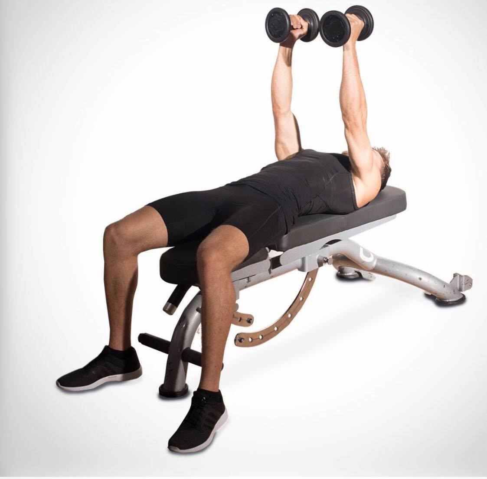

Preparation:Lie down on a flat bench with a dumbbell in each hand resting on top of your thighs, with your palms facing each other. Use your thighs to lift up the dumbbells one at a time so they are over your chest, shoulder width apart.
Execution: Breathe out and push the dumbbells up using your chest.

Preparation:Lie down on a decline bench with a dumbbell securely grasped between both of your hands, palms facing each other. With your feet firmly planted on the floor or bench supports, raise the dumbbell up over your chest with your arms extended.
Execution: Keep your arms straight and lower the weight behind your head in an arc movement, as you breathe in. Extend until you feel a stretch in your chest, exhale as you return the weight to start position and repeat.
Preparation:Sit down on a bench holding dumbbells in either hand in a neutral grip at about neck height.
Execution: Exhale and press the dumbbells up. As your press up, rotate the grips in your hands so that when they reach the top, your hands are in an overhand grip with your palms facing forward. Return, twisting back to neutral, and repeat.
Preparation:Standing in a shoulder-width stance, grab a pair of dumbbells with palms facing inward and let them hang at your sides.
Execution: Raise your arms out to the sides until they're at shoulder level. Pause, then lower the weights back to the starting position. Repeat.
.jpg)
.jpg)
Preparation:Sit down at the preacher bench and place your upper arms against the arm pad, and grab a dumbbell in one hand.
Execution: Raise the dumbbell until your forearm is almost straight and then lower it back down after a short pause. Repeat and switch arms when you finish your set.
.jpg)
.jpg)
Preparation:Sit on one side of a bench, hold one dumbbell in one hand with your palm facing up and place that same elbow (extended) against the front of your thigh.
Execution:Raise the dumbbell until it reaches shoulder height and slowly lower it back down. Repeat and switch arms after you complete a set.